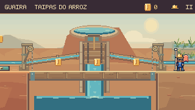

Nova revisão: Reservatórios, encaixes e comportas — 16/10.
Conexões e água
em movimento.
Visores acompanham os tubos inclinados até os canais. Nas comportas, a queda encontra a poça com espuma discreta e ondas que se afastam do ponto de impacto. Nos Respiros, a alimentação e os manômetros ganharam conexões mais claras.

ANTESDEPOISO visor percorre a inclinação e atravessa as juntas. As bocas dos tubos encontram a água dos canais; a queda forma pequenas ondas a partir de seu ponto de impacto.
Entrada e saída reconhecíveis
O fluxo segue a alimentação real. A primeira válvula abastece a entrada da comporta final; a saída para o arrozal aguarda o segundo acionamento.
Juntas com continuidade
Os tubos usam bronze, sombras e visores na mesma linguagem das oficinas de Guaíra. As braçadeiras preservam a passagem visual da água, inclusive nas inclinações.
Tubos e quedas em movimento
Nos Respiros, a tubulação sai da parede da estação, passa pelas curvas e entra na alimentação da grelha. Os manômetros têm conexões na base e mantêm o aviso no primeiro instante da subida do jato.
Comparações das comportas · Comparações dos Respiros


Conferência durante a travessia
Percursos completos com entradas de teclado, física e câmera nativas. Simulação a 60 Hz, captura a 15 quadros por segundo.
Conferência desta rodada
909 testes de Guaíra e build aprovados. Três percursos completos com capacete intacto, dez comparações e três animações em detalhe. As oito fases também foram conferidas no navegador quanto a teclado, pausa e retorno ao mapa.
Comparações e percursos · Conferência no navegador · Registro técnico